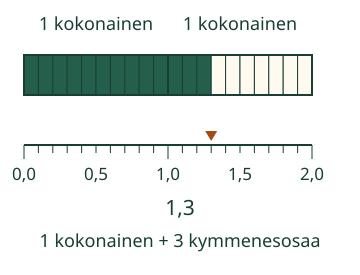

<link rel="stylesheet" href="lesson.css">


<section data-teaching-step="1" data-lesson-role="teaching-step">
<section class="lesson-intro"><h2>Myös kokonaisen osalla on paikka luvussa</h2><p>Loikka jakaa yhden nauhan kymmeneen yhtä suureen osaan. Yksi osa on yksi kymmenesosa.</p><p><strong>Tiedän, että yksi kymmenesosa on 0,1.</strong></p></section>
</section>


<section>


<section data-teaching-step="2" data-lesson-role="teaching-step">
<h2>Sama kokonainen, kymmenen osaa</h2><p>Piirrä nauha. Sovi: koko nauha on 1. Jaa se kymmeneen yhtä suureen osaan. Yhden osan määrä kirjoitetaan <strong>0,1</strong>.</p>
</section>


<section data-teaching-step="3" data-lesson-role="teaching-step">
<h3>Seitsemän kymmenesosaa</h3><p>Seitsemän tällaista osaa on <strong>0,7</strong>. Se on vähemmän kuin yksi kokonainen. Se ei ole seitsemän kokonaista. Pilkun edessä oleva 0 kertoo, ettei täyttä kokonaista ole.</p>
</section>


<section data-teaching-step="4" data-lesson-role="teaching-step">
<h3>Yksi kokonainen ja kolme osaa</h3><p>Kymmenen kymmenesosaa täyttää yhden nauhan: <strong>10 kymmenesosaa = 1 kokonainen</strong>. Vielä kolme samanlaista osaa tekee määrän <strong>1,3</strong>. Pilkun jälkeen oleva 3 kertoo kymmenesosat.</p><figure data-lesson-role="worked-example"><figcaption>Nauhan määrä ja lukusuoran paikka kertovat saman luvun.</figcaption></figure>
</section>


</section>


<section data-tenths-lesson hidden>
<section data-teaching-step="5" data-lesson-role="teaching-step">
<h2>Tutki vaiheittain</h2><p data-lesson-role="question">Ennusta: kuinka monta kymmenesosa-askelta vie yhdestä kokonaisesta toiseen? Katso ensin jako, sitten väri ja merkintä.</p>
</section>

<section data-teaching-step="6" data-lesson-role="teaching-step">
<label>Määrä<select data-model-case><option value="seven">7 kymmenesosaa</option><option value="thirteen">1 kokonainen ja 3 kymmenesosaa</option><option value="whole">10 kymmenesosaa</option></select></label><div data-model></div><p><button type="button" data-action="previous">Edellinen</button> <button type="button" data-action="next">Seuraava</button> <button type="button" data-action="model-reset">Alkuun</button> <button type="button" data-action="model-end">Näytä kaikki</button></p><p data-model-caption aria-live="polite"></p>
</section>


<section data-teaching-step="7" data-lesson-role="teaching-step">
<section data-practice><h2>Merkitse paikka</h2><div data-audience-columns><div data-visual-column><label>Tehtävä<select data-task><option value="seven">Luku 0,7</option><option value="thirteen">Kokonainen ja osat</option><option value="whole">Kymmenen kymmenesosaa</option><option value="metre">Siirto: 1,3 metriä</option></select></label><p data-task-text></p><div data-choice-picture></div></div><div data-response-column><p>Siirrä merkkiä. Nuolinäppäin siirtää yhden kymmenesosan.</p><label>Merkin paikka<input type="range" min="0" max="20" step="1" value="0" data-point aria-label="Paikka 0:sta 2:een, yksi askel on yksi kymmenesosa"></label><p><button type="button" data-action="point-left">0,1 vasemmalle</button> <button type="button" data-action="point-right">0,1 oikealle</button></p><label><input type="checkbox" data-readout> Näytä valitun paikan luku avuksi</label><button type="button" data-action="check">Tarkista paikka</button><p data-feedback role="status" aria-live="polite"></p><details data-lesson-role="hint"><summary>Apua: kokonaiset ja osat</summary><p>Ennen pilkkua ovat kokonaiset. Heti pilkun jälkeen ovat kymmenesosat. Kymmenen yhtä suurta väliä vie 0:sta 1:een. Laske välejä, älä viivoja. Kuvan yhden kokonaisen mitta pysyy samana.</p></details></div></div></section>
</section>
</section>


<section data-teaching-step="8" data-lesson-role="teaching-step">
<section><h2>Uusi tilanne: metrimitta</h2><p>Sovi nyt, että kokonainen on yksi metri. Jaa metrin väli kymmeneen yhtä suureen osaan. Yksi tällainen osa on <strong>0,1 metriä</strong>. Yksi metri ja kolme tällaista osaa on <strong>1,3 metriä</strong>. Ruudun kuvan kokoa ei mitata oikeana metrinä.</p></section>
</section>


<section data-teaching-step="9" data-lesson-role="teaching-step">
<details data-lesson-role="teaching-step"><summary>Lisätutkimus</summary><p>Näytä sama määrä kahdella tavalla: 13 kymmenesosaa tai 1 kokonainen ja 3 kymmenesosaa. Entä 10 kymmenesosaa? Sen voi kirjoittaa 1,0 tai 1. Pilkun jälkeen oleva nolla kertoo, ettei irrallisia kymmenesosia ole.</p></details>
</section>


<details class="teacher" data-lesson-role="teacher-note"><summary>Opettajalle: tuki ja rajat</summary><p>Vuosiluokat 3–6. Vaadittu esitieto M-PLACE-02 on kymppi–ykköspaikka-arvo. M-FRAC-02 on vahva tuki, ei pakollinen lisäportti. Yhtä suuriin kymmeneen osaan jakaminen selitetään tässä. Merkinnän 1/10 voi näyttää valinnaisena rinnakkaistapana.</p><p>Offline: samanpituiset nauhat, kumpikin kymmeneen yhtä suureen osaan. Näytä 0,7 ja 1,3 vierekkäisillä nauhoilla. Metritehtävässä käytetään annettua metrin yksikköä; senttimetreiksi muuntamista ei vaadita. Kuva ja lukusuora käyttävät samaa yhden kokonaisen mittaa. Vaiheet ovat käsin ohjattuja, eivät fyysisen ajan simulaatio.</p><p>Harjoituksen liukusäädin valitsee kokonaisia kymmenesosa-askelia 0–20 eli lukuja 0–2,0. Malli ja valinnainen lukeman näyttö ovat apuja, eivät riippumattomuuden todentajia. Ne säilyttävät vastauksen palautteen. Merkin tai tehtävän muutos poistaa sen. Muita desimaalipaikkoja, pyöristystä ja yleistä desimaalilaskentaa ei oleteta. Ei pisteitä, henkilöhistoriaa, oppimistuloksen tai itsenäisen/formaalin hallinnan väitettä. Staattinen selitys ja paperitehtävä toimivat ilman JavaScriptiä.</p></details>


<section data-teaching-step="10" data-lesson-role="teaching-step">
<section><h2>Lopuksi</h2><p>Näytä missä 0,1 on. Kuinka monta samanlaista askelta tekee yhden kokonaisen?</p></section>
</section>


